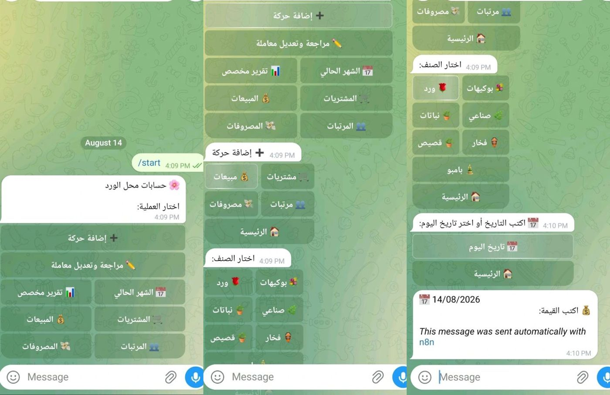

Business Accounting Automation System
Record sales, purchases, expenses and salaries from Telegram. n8n processes each entry, timestamps it and posts it to Google Sheets, with review, editing and reports by date and type.
Post on LinkedIn